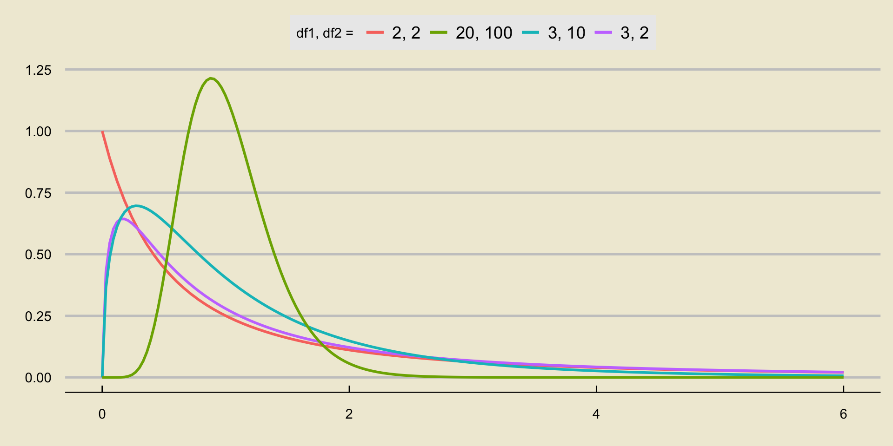
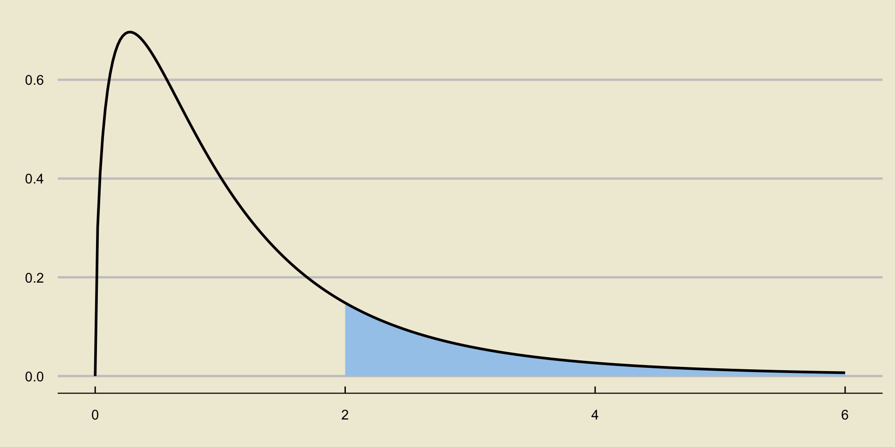
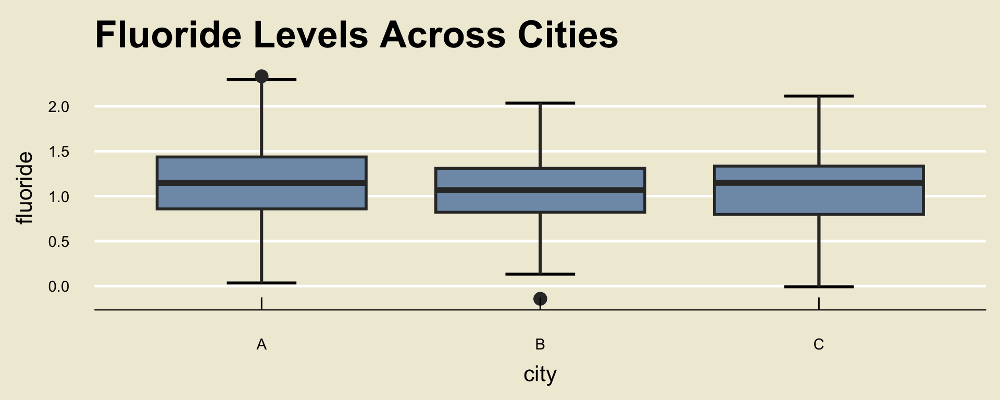
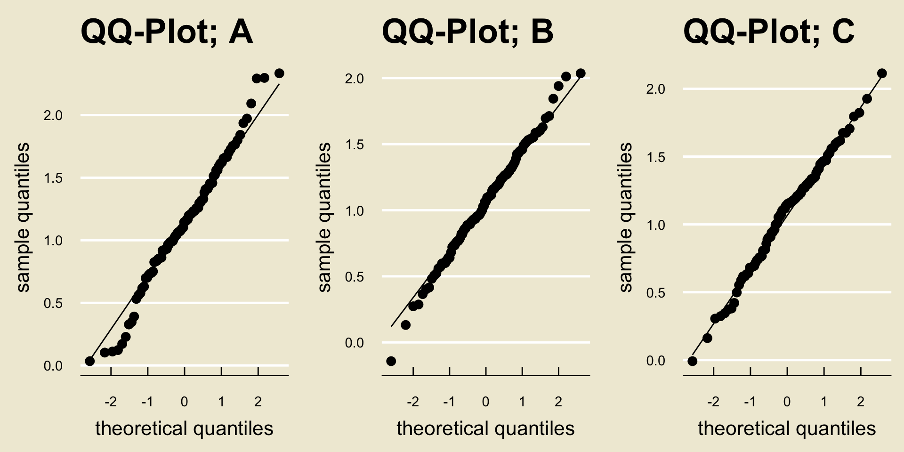

0.03973904581390475PSTAT 5A: Lecture 17
Testing Across Multiple Populations
Ethan P. Marzban
5/30/23
Multiple Populations
So far, we’ve talked about constructing confidence intervals and performing hypothesis tests for both population proportions and population means.
One crucial thing to note is that everything we’ve done has been in the context of a single population
Sometimes, as Data Scientists, we may want to make claims about the differences between two populations
E.g. Is the average monthly income in Santa Barbara different from the average monthly income in San Francisco?
E.g. Is the proportion of people who test positive for a disease in one country different than the proportion that test positive in a second country?
Two Populations
Two Populations
Statistically: we are imagining two populations, Population 1 and Population 2, governed by parameters \(\theta_1\) and \(\theta_2\), respectively, and trying to make claims about the relationship between \(\theta_1\) and \(\theta_2\).
- For example, we could consider two populations with means \(\mu_1\) and \(\mu_2\), respectively, and try to make claims about whether or not \(\mu_1\) and \(\mu_2\) are equal.
The trick Statisticians use is to think in terms of the difference \(\theta_2 - \theta_1.\)
- For example, if our null hypothesis is that \(\theta_1 = \theta_2\), this can be rephrased as \(H_0: \ \theta_2 - \theta_1 = 0\).
Two Populations
The reason we do this is because we have now effectively reduced our two-parameter problem into a one-parameter problem, involving only the parameter \(\delta := \theta_2 - \theta_1\).
Now, we will need a point estimator of \(\delta\).
If \(\widehat{\theta}_1\) and \(\widehat{\theta}_2\) are point estimators of \(\theta_1\) and \(\theta_2\), respectively, then a natural point estimator of \(\delta\) is \(\widehat{\delta} = \widehat{\theta}_2 - \widehat{\theta}_1\).
- For example, a natural point estimator for the difference \(\mu_2 - \mu_1\) of population means is \(\overline{X}_2 - \overline{X}_1\), the difference in sample means.
Two Populations
We will ultimately need access to the sampling distribution of \(\widehat{\delta}\).
Before delving into that, however, we will need a little more probability knowledge; specifically, knowledge on how linear combinations of random variables work.
Linear Combinations of Random Variables
Linear Combinations of Random Variables
Recall, from many weeks ago, that a random variable \(X\) is simply some numerical variable that tracks a random outcome of an experiment.
- E.g. number of heads in 10 tosses of a fair coin; number of people in a population that test positive for a disease; etc.
A random variable \(X\), whether it be discrete or continuous, has an expected value \(\mathbb{E}[X]\) and a variance \(\mathrm{Var}(X)\).
Now, suppose we have two random variables \(X\) and \(Y\), and three constants \(a\), \(b\), and \(c\).
Our task for now is to say as much as we can about the quantity \(aX + bY + c\).
Linear Combinations of Random Variables
Theorem
Given two random variables \(X\) and \(Y\), and constants \(a, \ b,\) and \(c\), \[ \mathbb{E}[aX + bY + c] = a \cdot \mathbb{E}[X] + b \cdot \mathbb{E}[Y] + c \]
You will prove this in the discrete case on your upcoming homework.
As an example: if \(\mathbb{E}[X] = 2\) and \(\mathbb{E}[Y] = -1\), then \[\mathbb{E}[2X + 3Y + 1] = 2(2) + 3(-1) + 1 = 2 \]
Linear Combinations of Random Variables
Theorem
Given two independent random variables \(X\) and \(Y\), and constants \(a, \ b,\) and \(c\), \[ \mathrm{Var}(aX + bY + c) = a^2 \mathrm{Var}(X) + b^2 \mathrm{Var}(Y) \]
You will not be responsible for the proof of this fact.
Also, we haven’t explicitly talked about what independence means in the context of random variables; for now, suffice it to say that it works analogously to the concept of independence of events. That is, if the random variables \(X\) and \(Y\) come from two experiments that don’t have any relation to each otehr, then \(X\) and \(Y\) will be independent.
Back to our Two-Parameter Problem
Two Populations
Alright, so what does this mean in the context of our two-proportion problem?
Well, for one thing, we can easily construct a confidence interval for \((\theta_2 - \theta_1)\) using: \[ (\widehat{\theta}_2 - \widehat{\theta}_1) \pm c \cdot \sqrt{\mathrm{Var}(\widehat{\theta}_1) + \mathrm{Var}(\widehat{\theta}_2)} \] where \(c\) is a constant that is determined by both the sampling distribution of \(\widehat{\theta}_2 - \widehat{\theta}_1\) as well as our confidence level.
By the way, can anyone tell me why the variances are added, and not subtracted?
Two Means
To make things more specific, let’s consider comparing two population means.
Specifically: imagine we have two populations (which we will call Population 1 and Population 2), governed by population means \(\mu_1\) and \(\mu_2\), respectively.
For now, let’s focus a two-sided test, where our hypotheses are \[\left[ \begin{array}{rr} H_0: & \mu_1 = \mu_2 \\ H_A: & \mu_1 \neq \mu_2 \end{array} \right.\]
Two Means
Again, it’s customary to rephrase things to be in terms of differences: \[\left[ \begin{array}{rr} H_0: & \mu_2 - \mu_1 = 0 \\ H_A: & \mu_2 - \mu_1 \neq 0 \end{array} \right.\]
Now, we need data!
Suppose we have a sample \(X = \{X_i\}_{i=1}^{n_1}\) taken from Population 1 and a sample \(Y = \{Y_i\}_{i=1}^{n_2}\) taken from Population 2.
- Note that we are allowing for different sample sizes, \(n_1\) and \(n_2\)!
Let’s also assume that, in addition to being representative samples, the two samples are both independent within themselves and independent from each other (i.e. assume the \(X_i\)’s and \(Y_i\)’s are independent, and that the \(X\)’s are independent from the \(Y\)’s)
Two Means
Again, we are interested in finding a point estimator for \(\mu_2 - \mu_1\).
Here’s a question: do we have a natural point estimator for \(\mu_2\)? What about for \(\mu_1\)?
So, it seems that a natural point estimator for \(\delta = \mu_2 - \mu_1\) is \[ \widehat{\delta} = \overline{Y} - \overline{X} \]
What is the sampling distribution of \(\widehat{\delta}\)?
Well, there are a few cases to consider.
Sampling Distribution of \(\widehat{\delta}\)
Suppose that our two populations had known variances \(\sigma_1^2\) and \(\sigma_2^2\), respectively.
Then, if both \(\overline{X}\) and \(\overline{Y}\) were normally distributed, we could use a fact (from probability theory) that linear combinations of normally distributed random variables are also normally distributed to conclude that \[ \widehat{\delta} \sim \mathcal{N}\left( \delta, \ \sqrt{ \frac{\sigma_1^2}{n_1} + \frac{\sigma_2^2}{n_2} } \right) \]
- See the chalkboard for more details
The Test Statistc
In this case, a natural candidate for our test statistic would be \[ \frac{\widehat{\delta}}{\sqrt{ \frac{\sigma_1^2}{n_1} + \frac{\sigma_2^2}{n_2}}} = \frac{\overline{Y} - \overline{X}}{\sqrt{ \frac{\sigma_1^2}{n_1} + \frac{\sigma_2^2}{n_2}}} \] as, under the null, this would follow a standard normal distribution.
However, there are a few problems with this.
For one, it requires both \(\overline{X}\) and \(\overline{Y}\) to be normally distributed, which we know is not always the case.
Alright, that’s fine though- so long as our sample sizes are large enough, the Central Limit Theorem kicks in and we can be reasonably certain that \(\overline{X}\) and \(\overline{Y}\) will be pretty close to normally distributed.
The Test Statistic
However, the main problem in using this test statistic is that it requires access to the population variances \(\sigma_1^2\) and \(\sigma_2^2\)!
Any ideas on how to remedy this?
- Right; let’s just replace the population variances with their sample analogues: \[ \mathrm{TS} = \frac{\overline{Y} - \overline{X}}{\sqrt{ \frac{s_X^2}{n_1} + \frac{s_Y^2}{n_2}}}\] where \[\begin{align*} s_X^2 & = \frac{1}{n_1 - 1} \sum_{i=1}^{n_1} (X_i - \overline{X})^2 \\ s_Y^2 & = \frac{1}{n_2 - 1} \sum_{i=1}^{n_2} (Y_i - \overline{Y})^2 \end{align*}\]
The Test Statistic
Any guesses on what distribution this follows under the null?
If you said t….. you’d be wrong! (But pretty close.)
It turns out that, under the null (i.e. assuming that \(\mu_1 = \mu_2\), or, equivalently, that \(\delta = \mu_2 - \mu_1 = 0\)), this test statistic approximately follows a t-distribution.
What degrees of freedom?
That’s right: \[ \mathrm{df} = \mathrm{round}\left\{ \frac{ \left[ \left( \frac{s_X^2}{n_1} \right) + \left( \frac{s_Y^2}{n_2} \right) \right]^2 }{ \frac{\left( \frac{s_X^2}{n_1} \right)^2}{n_1 - 1} + \frac{\left( \frac{s_Y^2}{n_2} \right)^2}{n_2 - 1} } \right\} \]
- This is related to what is known as the Satterthwaite Approximation, sometimes called the Welch-Satterthwaite Equation
The Test
Alright, so we finally have a test statistic: \[ \mathrm{TS} = \frac{\overline{Y} - \overline{X}}{\sqrt{ \frac{\sigma_1^2}{n_1} + \frac{\sigma_2^2}{n_2}}} \] and its (approximate) distribution under the null: \[ \mathrm{TS} \stackrel{H_0}{\sim} t_{\nu} \] where \(\nu\) is given by the Satterthwaite Approximation.
Recall our hypotheses: \[ \left[ \begin{array}{rr} H_0: & \mu_2 - \mu_1 = 0 \\ H_A: & \mu_2 - \mu_1 \neq 0 \end{array} \right. \]
The Test
- We can see that large values of \(|\mathrm{TS}|\) lead credence to the alternative over the null; as such, our decision will take the form \[ \texttt{decision}(\mathrm{TS}) = \begin{cases} \texttt{reject } H_0 & \text{if } |\mathrm{TS}| > c \\ \texttt{fail to reject } H_0 & \text{otherwise}\\ \end{cases} \] where \(c\) is the appropriately-selected quantile of the appropriate t-distribution.
Worked-Out Example
Worked-Out Example 1
Gaucho Gourmande has two locations: one in Goleta and one in Santa Barbara. The owner would like to determine whether the average revenue generated by the two locations are equal or not. To that end, he computes the net revenue generated by the Goleta location over 30 days and also computes the net revenue generated by the Santa Barbara location over 35 days (assume all of the necessary independence conditions hold), and produced the following information:
\[\begin{array}{r|cc} & \text{Sample Average} & \text{Sample Standard Deviation} \\ \hline \textbf{Goleta} & \$13 & \$3.45 \\ \textbf{Santa Barbara} & \$15 & \$4.23 \end{array}\]
Test the owner’s claims at an \(\alpha = 0.05\) level of significance, using a two-sided alternative.
Solutions
Our first step should be to figure out what “Population 1” and “Population 2” are in the context of the problem.
Let “Goleta Location” be Population 1 and “Santa Barbara Location” be Population 2.
- It is perfectly acceptable to swap these two, but just be sure you remain consistent throughout the problem!
- Also, I will expect you to explicitly write out your definitions of the populations (like above), even if the problem doesn’t explicitly ask you to do so.
In this way, \[ \overline{X} = 13; \quad s_X = 3.45; \quad \overline{Y} = 15; \quad s_Y = 4.23 \]
Additionally, \(n_1 = 30\) and \(n_2 = 35\).
Solutions
Now, let’s compute the value of the test statistic. \[ \mathrm{TS} = \frac{\overline{Y} - \overline{X}}{\sqrt{ \frac{s_X^2}{n_1} + \frac{s_Y^2}{n_2}}} = \frac{15 - 13}{\sqrt{\frac{3.45^2}{30} + \frac{4.23^2}{35} }} = 2.10 \]
We should next figure out the degrees of freedom: \[\begin{align*} \mathrm{df} & = \mathrm{round}\left\{ \frac{ \left[ \left( \frac{s_X^2}{n_1} \right) + \left( \frac{s_Y^2}{n_2} \right) \right]^2 }{ \frac{\left( \frac{s_X^2}{n_1} \right)^2}{n_1 - 1} + \frac{\left( \frac{s_Y^2}{n_2} \right)^2}{n_2 - 1} } \right\} \\ & = \mathrm{round}\left\{ \frac{ \left[ \left( \frac{3.45^2}{30} \right) + \left( \frac{4.23^2}{35} \right) \right]^2 }{ \frac{\left( \frac{3.45^2}{30} \right)^2}{30 - 1} + \frac{\left( \frac{4.23^2}{35} \right)^2}{35 - 1} } \right\} = 63 \end{align*}\]
Solutions
At this point, we could either proceed using critical values or using p-values.
Let’s use p-values, for practice.
Our p-value is computed as
This is below our level of significance \(\alpha = 0.05\) meaning we would reject the null.
If we wanted to instead use critical values:
- This means our critical value is 1.67; since \(|\mathrm{TS}| = |2.10| = 2.10 > 1.67\), we would again reject at an \(\alpha = 0.05\) level of significance.
Solutions
At a 5% level of significance, there was sufficient evidence to reject the owner’s claims that the revenue generated by the two locations are equal, in favor of the alternative that the revenue generated by the two locations are not equal.
Extensions
Unsurprisingly, we can adapt the above procedure to account for one-sided alternatives as well.
For instance, suppose we wish to test \[ \left[ \begin{array}{rr} H_0: & \mu_1 = \mu_2 \\ H_A: & \mu_1 < \mu_2 \end{array} \right.\]
Again, we rephrase things as: \[ \left[ \begin{array}{rr} H_0: & \mu_2 - \mu_1 = 0 \\ H_A: & \mu_2 - \mu_1 > 0 \end{array} \right.\] which is now a familiar upper-tailed test on \(\delta = \mu_2 - \mu_1\) and \(\mu_0 = 0.\)
Extensions
- Specifically, we would take the same test statistic (which would still follow the same distribution under the null) and use the decision rule \[ \texttt{decision}(\mathrm{TS}) = \begin{cases} \texttt{reject } H_0 & \text{if } \mathrm{TS} > c \\ \texttt{fail to reject } H_0 & \text{otherwise}\\ \end{cases} \] where \(c\) is the appropriate quantile of the approximate t distribution (with degrees of freedom given by the Satterthwaite Approximation).
Multiple Populations, and ANOVA
Leadup
Consider the following situation: a new drug claims to significantly lower systolic blood pressure.
To ensure these claims are validated, a clinical trial collects several volunteers and groups them into four groups: a control group, and three groups which each are administered a different dosage of the drug.
If the drug is truly ineffective, we would imagine the average systolic blood pressure of each group to be fairly similar to the average systolic blood pressures of the other groups.
In other words, given \(k\) groups, each with some population mean \(\mu_i\) (for \(i = 1, 2, \cdots, k\)), we wish to determine whether or not all of the \(\mu_i\)’s are the same.
ANOVA
This is the basic setup of Analysis of Variance (often abbreviated as ANOVA).
Given \(k\) groups, each with mean \(\mu_i\), we wish to test the null hypothesis that all group means are equal (i.e. \(H_0: \ \mu_1 = \mu_2 = \cdots = \mu_k\)) against the alternative that at least one of the group means differs significantly from the others.
CAUTION
Note the alternative hypothesis!
- It is NOT correct to write the alternative as \(H_A: \ \mu_1 \neq \mu_2 \neq \cdots \neq \mu_k\).
ANOVA
Here is the general idea.
Observations within each group will have some amount of variability (by virtue of being random observations).
However, the sample means (of the groups) themselves will also have some variability (again, due to the fact that sample means are random).
The question ANOVA seeks to answer is: is the variability between sample means greater than what we would expect due to chance alone?
- If so, we may have reason to believe that at least one of the group means differs significantly from the others; i.e. we would have evidence to reject the null.
ANOVA
In practice, ANOVA relies on what is known as the F-statistic.
The F-statistic is computed as \[ F = \frac{\mathrm{MS}_\mathrm{G}}{\mathrm{MS}_{\mathrm{E}}} \]
\(\mathrm{MS}_{\mathrm{G}}\) can be thought of as a measure of variability between groups; i.e. as a sort of variance of the sample means
\(\mathrm{MS}_{\mathrm{E}}\) can be thought of as a measure of variability within groups; i.e. as a sort of variance due to error/randomness.
As stated on the previous slide, when \(\mathrm{MS}_{\mathrm{G}}\) is much larger than \(\mathrm{MS}_{\mathrm{E}}\), i.e. when the variability between groups is much larger than the variability within groups, we would be more likely to reject the null that all group means are equal.
- Hence, we would reject \(H_0\) for large values of \(F\).
ANOVA
The formulas for computing \(\mathrm{MS}_{\mathrm{G}}\) and \(\mathrm{MS}_{\mathrm{E}}\) are not overly complicated, but can be a bit tedious.
- We will return to them later.
For now, let’s talk a bit about the sampling distribution of \(F\).
It turns out that, if we assume observations within each group are normally distributed (which ends up being a very crucial assumption), the statistic \(F\) follows what is known as the F-distribution.
As such, the critical value of our test is the appropriate percentile of the F-distribution.
The F-Distribution
The F-distribution is quite different from the distributions we have encountered thus far.
For one thing, it admits only nonnegative values in its state space (i.e. it has state space \([0, \infty)\)).
Additionally, it takes two parameters, referred to as the numerator degrees of freedom and the denominator degrees of freedom (sometimes abbreviated as just “degree of freedom 1” and “degree of freedom 2”.)
To notate the fact that a random variable \(X\) follows the F-distribution with degrees of freedom
d1andd2, respectively, we write \[ X \sim F_{\texttt{d1}, \ \texttt{d2}} \]
The F-Distribution
The Test Statistic
Recall that our test statistic in ANOVA is \[ F = \frac{\mathrm{MS}_\mathrm{G}}{\mathrm{MS}_{\mathrm{E}}} \]
As mentioned previously, if we assume normality within groups, then, under the null, \(F\) follows the F-distribution with \(k - 1\) and \(n - k\) degrees of freedom, respectively, where \(k\) is the number of groups and \(n\) is the combined number of observations: \[ F = \frac{\mathrm{MS}_\mathrm{G}}{\mathrm{MS}_{\mathrm{E}}} \stackrel{H_0}{\sim} F_{k - 1, \ n - k} \]
Since we reject only for large values of \(F\), our p-values are always computed as upper-tail probabilities:
p-Values in ANOVA
ANOVA Tables
As mentioned previously, computing \(\mathrm{MS}_{\mathrm{G}}\) and \(\mathrm{MS}_{\mathrm{E}}\) is not particularly challenging, but it can be quite tedious.
As such, computer software is usually utilized to carry out an ANOVA.
Often times, the results of such a computer-generated ANOVA are displayed in what is known as an ANOVA Table.
I find ANOVA tables to be best described by way of an example.
Example
Reference Example 1
A state official would like to determine whether or not the average fluoride levels in the water supplies of Cities A, B, and C are the same.
To that end, they took a sample of 100 fluoride measurements from city A, 110 from city B, and 100 from city C.
- After running an ANOVA in a computer software, the following output was produced:
| DF | Sum Sq | Mean Sq | F value | Pr(>F) | |
|---|---|---|---|---|---|
| Between Groups | 2 | 0.541799 | 0.2709 | 1.30682497808 | 0.272179497817 |
| Residuals | 307 | 63.6399 | 0.207296 |
- Let’s go through this table in more detail.
Interpreting an ANOVA Table
| DF | Sum Sq | Mean Sq | F value | Pr(>F) | |
|---|---|---|---|---|---|
| Between Groups | 2 | 0.343981 | 0.171991 | 0.927001041587 | 0.396843557892 |
| Residuals | 307 | 56.9591 | 0.185534 |
The DF column gives the degrees of freedom of the resulting F-statistic.
- Recall that these are meant to be \(k - 1\) and \(n - k\) respectively.
- \(k\) is the number of groups (i.e. 3, in this example), hence the numerator d.f. of 2.
- \(n\) is the total number of observations (i.e. 100 + 110 + 100 = 310, in this example), hence the denominator d.f. of 307 (310 - 3 = 307).
The rownames (“Between Groups” and “Residuals”) refer to whether the specified entry is in relation to a between group calculation or a within group calculation.
- The reason for calling the second row “Residuals” instead of “Within Group” will become clear next week, after we talk about Regression.
Interpreting an ANOVA Table
| DF | Sum Sq | Mean Sq | F value | Pr(>F) | |
|---|---|---|---|---|---|
| Between Groups | 2 | 0.343981 | 0.171991 | 0.927001041587 | 0.396843557892 |
| Residuals | 307 | 56.9591 | 0.185534 |
The Sum Sq column is a scaled version of the \(\mathrm{MS}_{\mathrm{G}}\) and \(\mathrm{MS}_{\mathrm{E}}\) quantities.
Don’t worry too much about how those were computed for now.
The Mean Sq entries are found by dividing the corresponding Sum Sq entry by the corresponding degree of freedom.
- That is: 0.171991 = 0.343981 / 2
- And: 0.185534 = 56.9591 / 307
Finally, the F value is simply the ration of the two Mean Sq values, and represents the value of our test statistic.
- The Pr(>F) is just our p-value.
Analyzing the Data
Maybe that was a little too opaque.
If you’d like, there is the actual data:
A B C
1 1.765793252 1.0969903 0.8893372313
2 1.457639487 0.2870172 1.673980678
3 0.3272998539 0.6808363 1.251111092
4 1.095808075 1.2379006 0.9022573626
5 1.410667987 0.9922533 0.7675894536
6 0.7399572196 0.8899447 1.117615437
7 1.232755793 0.9316065 0.3737125741
8 1.154274263 1.3892834 1.67516293
9 1.102145715 1.3327322 1.296435132
10 1.012699895 0.7350924 1.607457771
11 1.316513095 1.1671763 0.816422448
12 1.701518687 0.8616771 1.45467294
13 0.6174671647 2.0117302 1.379557127
14 1.614137039 0.7542573 0.3801190768
15 1.214315065 0.9248685 1.137032315
16 1.322568806 0.9104472 1.211800026
17 0.5316988941 0.8743895 0.8112870512
18 1.167568439 1.1064417 0.9079229895
19 1.842268501 1.1592197 1.266283383
20 0.5600975571 0.4025717 1.052936953
21 0.1111358597 0.8207547 0.6178776414
22 0.2283138521 0.5218210 1.336153889
23 1.233035082 1.5444821 1.172517814
24 2.292483665 2.0361300 1.182130396
25 1.661845627 1.6032929 1.113093457
26 1.936311107 1.1884932 1.272059779
27 1.149574608 1.4590064 0.9412990966
28 1.798998189 1.1167241 0.6817587653
29 0.964376006 1.7126866 0.7361788226
30 1.406602092 1.3171558 1.567508811
31 0.9663414057 0.9580213 0.1620266063
32 0.8253454929 0.5981795 1.313243321
33 1.166354148 0.7940150 0.4209655028
34 0.8619289925 1.1755322 0.3460173367
35 1.75423654 0.5596656 0.6170441472
36 1.19750664 0.9612827 0.9541098688
37 1.300104994 1.5859705 1.398728351
38 0.9311838315 1.0617239 0.305719329
39 1.728236132 1.8441543 1.823333996
40 0.734015249 1.6288662 1.593675665
41 1.430115776 0.9349482 1.010341883
42 0.9245640543 0.5062758 0.9393893861
43 0.6302833201 1.0307835 0.6409104121
44 0.8553313916 0.8576851 1.334618267
45 0.6977044289 1.2011012 1.100960662
46 0.9936511806 1.6957632 1.705428937
47 0.930429877 0.6007584 0.7612029733
48 1.256084968 0.8945088 1.316574767
49 1.382576335 1.1829400 1.053627858
50 1.026289871 1.5039893 0.6888426861
51 1.087047332 1.2542858 1.926036819
52 1.244547102 1.2157191 1.195822426
53 0.8300604643 1.5878198 1.349114526
54 1.45408001 1.2474061 0.5891445312
55 1.521112369 0.9551983 0.7448206699
56 1.201790399 1.0729141 1.1078628
57 2.297351832 0.7671714 0.8069951795
58 1.558729469 1.2686659 1.340910022
59 1.043863764 1.4270002 1.267264358
60 0.9189097764 -0.1418387 0.7179455626
61 0.983908872 1.5372595 1.156821193
62 0.8491355502 1.0273917 1.07181121
63 1.664392577 1.2343554 0.9961661192
64 0.7510949848 1.3149496 0.553034481
65 1.059438908 0.1319587 0.6940211732
66 0.8353519595 0.5716283 1.164702828
67 1.623091428 0.9167595 1.526293084
68 0.3907219854 0.7334437 0.6334109797
69 0.9187504084 1.1596691 1.617731702
70 1.039047154 0.8440360 1.15219132
71 1.259678211 0.3655715 0.4985811837
72 1.330451451 1.2949189 1.215525468
73 0.9921050538 1.4900517 1.468598686
74 1.594536229 1.2757410 1.188977611
75 1.257376889 0.7648802 2.113607293
76 2.333825528 0.9456562 1.208900453
77 0.3458392564 1.2693712 1.471653814
78 1.410300332 1.2912796 1.074960214
79 0.5774337312 1.4527445 1.511033358
80 0.7009955912 0.9322296 -0.008007406026
81 2.092542296 0.4816478 0.6841148682
82 1.972407074 0.7784213 0.9060748612
83 0.1719072597 1.2635539 1.296767106
84 0.9886131504 1.3475898 1.154749047
85 1.067076076 1.9400199 1.558352183
86 0.03414394576 1.0968726 1.23062258
87 1.075584744 1.1478458 1.163298305
88 1.296670609 0.9790805 1.004720958
89 1.208632573 0.8877082 1.143756914
90 0.1028031151 1.3627101 1.443280618
91 1.653854117 1.1913910 1.409884981
92 1.222271988 0.9670882 1.465768561
93 1.069043985 0.6181210 0.9620196655
94 0.7230535196 1.0007721 0.7572245096
95 1.455979508 0.8936071 0.8578699627
96 1.559134576 1.5520695 1.227264384
97 0.8589534306 1.4288504 1.795155782
98 1.144793806 0.6410757 1.17770267
99 1.513499311 1.5168673 1.288251183
100 0.12274394 0.8212093 0.323627882
101 NA 1.1032550 NA
102 NA 1.5310975 NA
103 NA 0.6400988 NA
104 NA 1.1141597 NA
105 NA 0.5978099 NA
106 NA 0.2734801 NA
107 NA 1.4446391 NA
108 NA 1.0612909 NA
109 NA 0.7210530 NA
110 NA 0.4153793 NAAnalyzing the Data
Whoops- maybe that’s too detailed.
Any ideas on how we might be able to get a better sense of the data that doesn’t involve looking at all those numbers?
Maybe… something we learned in Week 1?

Checking Assumptions
Finally, I should mention: every good statistician and data scientists starts by checking assumptions.
One of the key assumptions in ANOVA is that observations within each group are normally distributed.
How can we check that?
- That’s right: QQ-plots!
In lab, you’ll begin to start talking about how to start statistical analyses.
- Specifically, you will learn about something called Exploratory Data Analysis (EDA), part of which entails producing any diagnostic tools you may need to produce in order to ensure assumptions are being satisfied!
QQ-Plots for the Fluoride Dataset
